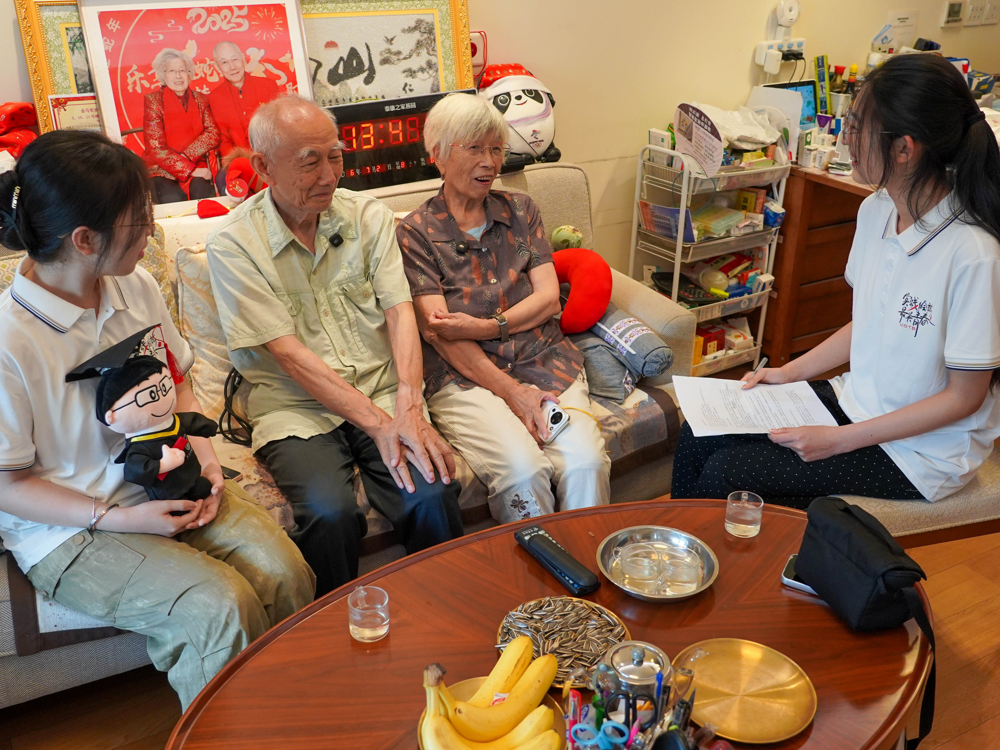
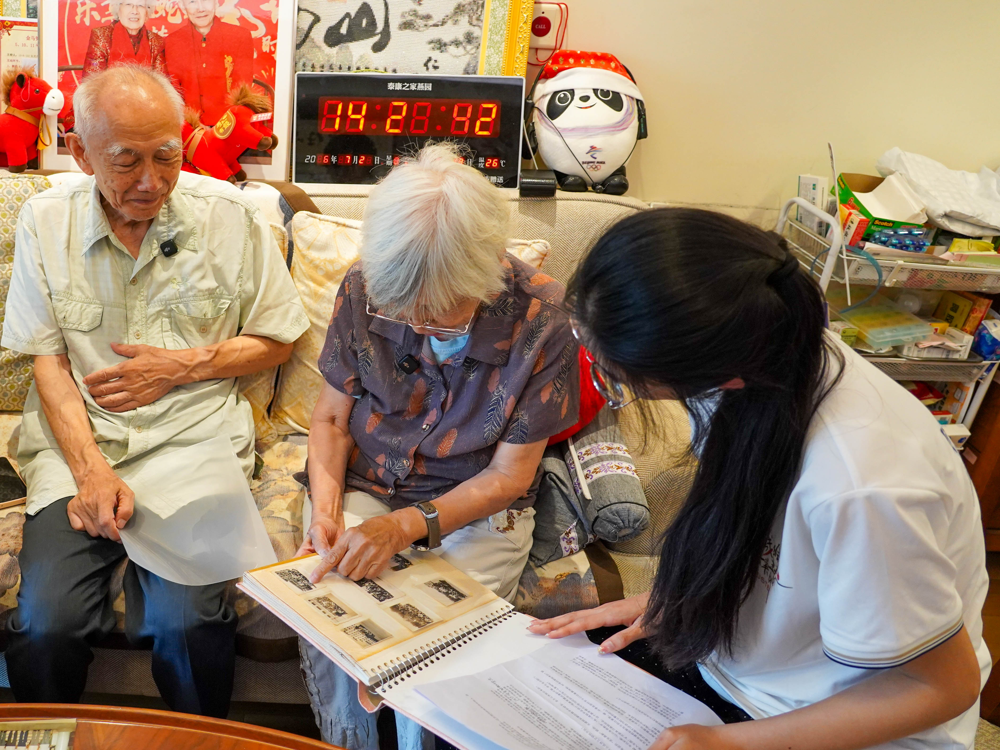

Q-01 · 口述访谈
口述
问 · 队员当年为什么选择北京钢铁学院？
当时钢铁学院在八大学院里实力很不错，就选了钢铁学院。当时刚经历大跃进、大炼钢铁，我们都清楚钢铁是国家支柱产业，心里愿意献身这个行业。高老师和我 1962 年一同入学，进大学第二年选举班干部，高老师学习好被选为班长，我当副班长管生活，我们俩从那时候起一直搭档到现在。
赵承平
受访人 · 口述
USTB-1967 北京钢铁学院 1967 届 · 冶金 · 钢铁研究院高级工程师
要干就干好，干就干成事。 —— 赵承平



当时钢铁学院在八大学院里实力很不错，就选了钢铁学院。当时刚经历大跃进、大炼钢铁，我们都清楚钢铁是国家支柱产业，心里愿意献身这个行业。高老师和我 1962 年一同入学，进大学第二年选举班干部，高老师学习好被选为班长，我当副班长管生活，我们俩从那时候起一直搭档到现在。
钢铁学院最大的优点就是面向社会，不是关门办学，这方面比别的学校做得好。大一刚进校就参加“双十条”宣讲，六二、六三年去北京郊区怀柔，那时刚从城市出来、没到过农村，还没过正月十五，苦得不得了。老百姓家里给我们做饭，根本没有菜，油就拿筷子蘸一点搁在菜里，就是最好的待遇。高老师到了山顶上，叫松树台子，就那么一户人家，睡在大炕上。
那时候说这些我们都不信，但去看了就知道，一家人就一条裤子，谁出门穿这条裤子，不出门就钻被窝里。解放这么多年还那么苦，离北京 100 来公里就这么苦，还是需要努力。1963 年去太原认识实习，条件同样艰苦，还去刘胡兰故乡听烈士母亲讲述故事，接受红色教育。64 年搞好多运动，65 年夏天参加首钢四清，还参加第一届全国运动会体操表演。大学生活特别丰富，每年都有很多社会实践。高芸生“一参三改三结合”的指导思想对我们影响很大。
从钢院出来的人，到每个钢铁厂去看，保证一步一步最后做到领导岗位。钢院出来的学生能吃苦，不像别的学生出来很傲、娇气。人家都说“钢小伙、铁姑娘”，确实是这样，没有很娇气的，出来特别泼辣，什么都能干，没有吃不了的苦。
这句话贯穿我们一辈子。你一定得好好活着，起码要为祖国健康工作 50 年。这句话已经在脑子里形成定式了，不然培养你就白培养了，工作的时间还不够培养你的时间，所以你要好好地能工作 50 年。我们实现了当时国家对我们的要求，工作 60 多年了，到现在还在把知识贡献给国家。
你得把知识变成生产力，不能光是知识，搁在书本上没有用。高老师老想推广，我就说办个公司，有什么想法自己去做，放手去干。拿着国家钱，应该按国家的想法干；自己办的公司，想干什么就干什么，他好多想法就可以逐渐实现。特别是高炉可视化，要推广到全国各大高炉、推广到全世界是很困难的，有了公司之后通过公司运作就推广出去了，现在世界上很多国家都在用。
我觉得在学校里最大的收获就是：你要就干，干就好好干，干就干成事。不是马马虎虎、庸庸碌碌地过去。
高炉炼铁几十年已经成型了，不可能把高炉再变成什么，但高炉上很多技术都可以应用、开发，这需要钢铁学院出来的学生干。铁水出来了，质量和数量都有改进和上升的空间，得努力，要有新东西搁进去。新的孩子们来了以后，逐渐把自己学的东西融会贯通，然后有所创新，这才能发展。高老师的老师们都是大咖、特有名，但不能说就跟着老师后面，还得比老师有所进步，要比我们这一代人强才行。